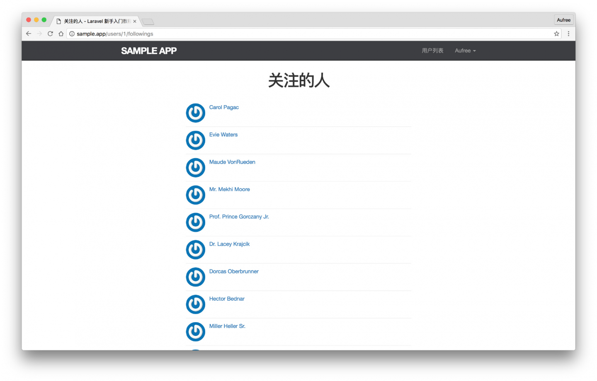
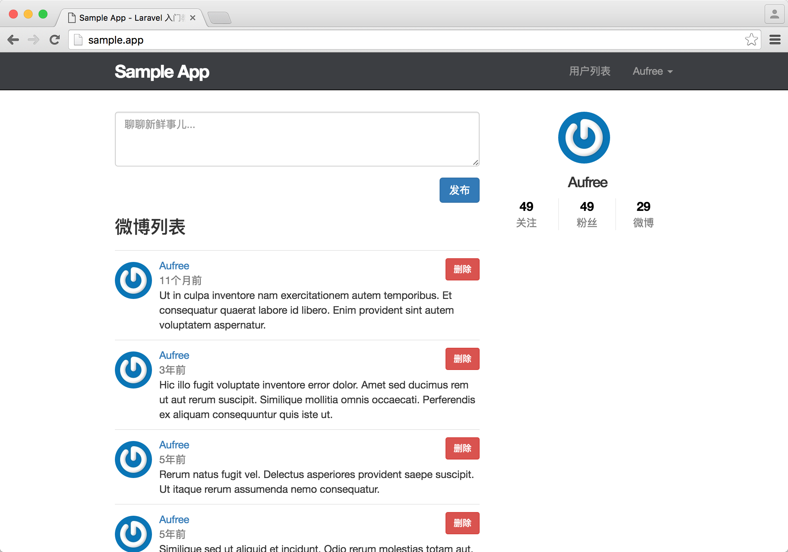
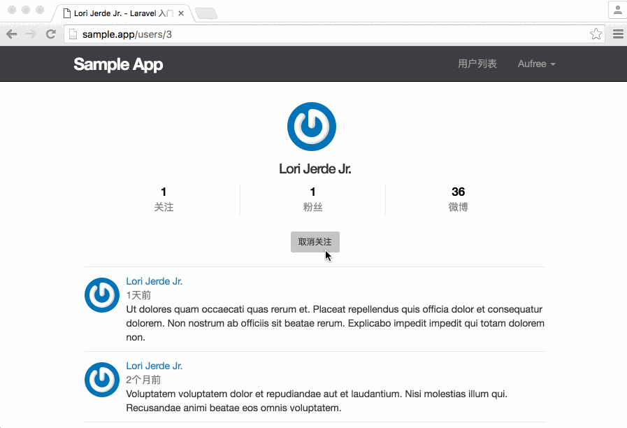

11.3. 关注用户的网页界面
关注用户的网页界面
现在我们已经实现了用户关注功能的主要工具方法，并且能够通过用户来获取到他的粉丝列表和关注人列表。
接下来让我们先着手视图的构建，在页面上显示粉丝列表和关注人列表，并在用户的个人页面添加上一个关注按钮，方便其他用户对其进行关注。
示例数据
目前并没有一个用户拥有大量的粉丝或关注了多个人，接下来我们需要用数据填充的方式，为第一个用户添加假数据，让他拥有一些关注人和粉丝。
首先我们需要生成一个数据填充文件。
$ php artisan make:seeder FollowersTableSeeder我们会使用第一个用户对除自己以外的用户进行关注，接着再让所有用户去关注第一个用户。假数据的生成代码如下所示：
database/seeds/FollowersTableSeeder.php
<?php
use Illuminate\Database\Seeder;
use App\Models\User;
class FollowersTableSeeder extends Seeder
{
/**
* Run the database seeds.
*
* @return void
*/
public function run()
{
$users = User::all();
$user = $users->first();
$user_id = $user->id;
// 获取去除掉 ID 为 1 的所有用户 ID 数组
$followers = $users->slice(1);
$follower_ids = $followers->pluck('id')->toArray();
// 关注除了 1 号用户以外的所有用户
$user->follow($follower_ids);
// 除了 1 号用户以外的所有用户都来关注 1 号用户
foreach ($followers as $follower) {
$follower->follow($user_id);
}
}
}接着让我们为假数据的生成顺序进行设定。
database/seeds/DatabaseSeeder.php
<?php
use Illuminate\Database\Seeder;
use Illuminate\Database\Eloquent\Model;
class DatabaseSeeder extends Seeder
{
/**
* Run the database seeds.
*
* @return void
*/
public function run()
{
Model::unguard();
$this->call(UsersTableSeeder::class);
$this->call(StatusesTableSeeder::class);
$this->call(FollowersTableSeeder::class);
Model::reguard();
}
}最后，我们还需要对数据库进行重置和填充。
$ php artisan migrate:refresh --seed『关注的人』列表页面和『粉丝』列表页面
现在假数据已填充完毕，接下来让我们接着定义用户关注者列表和粉丝列表的路由，用于对接下来的关注人列表和粉丝列表进行显示。
routes/web.php
<?php
.
.
.
Route::get('/users/{user}/followings', 'UsersController@followings')->name('users.followings');
Route::get('/users/{user}/followers', 'UsersController@followers')->name('users.followers');该路由列表信息如下所示：
| HTTP 请求 | URL | 动作 | 作用 |
|---|---|---|---|
| GET | /users/{user}/followings | UsersController@followings | 显示用户的关注人列表 |
| GET | /users/{user}/followers | UsersController@followers | 显示用户的粉丝列表 |
可以看到两个新增的路由都被映射到用户控制器上，因此我们接下来需要对控制器加入两个方法，一个是用于显示用户关注人列表视图的 followings 方法，另一个则是用户显示粉丝列表的 followers 方法。接着我们还需要对这两个动作的请求进行过滤，只允许登录用户访问，得益于我们使用了 auth 中间件的 except 选项，这里我们不需要做任何修改，此控制器默认安全。完整的代码如下。
app/Http/Controllers/UsersController.php
<?php
namespace App\Http\Controllers;
.
.
.
class UsersController extends Controller
{
.
.
.
public function followings(User $user)
{
$users = $user->followings()->paginate(30);
$title = '关注的人';
return view('users.show_follow', compact('users', 'title'));
}
public function followers(User $user)
{
$users = $user->followers()->paginate(30);
$title = '粉丝';
return view('users.show_follow', compact('users', 'title'));
}
}由上面代码可知，我们在新增的两个动作中添加了 title 变量用于网页标题的显示，这是因为我们最终构建出来的关注人列表视图和粉丝视图除了显示的动态数据和标题可能有些不同，其它的页面元素基本一致，为了避免写重复代码，我们将对这两份数据使用同一套视图进行展示。由 view 方法传送的参数可知，我们接下来需要新增一个 users/show_follow 视图来用于数据展示。该视图的页面结构如下。
resources/views/users/show_follow.blade.php
@extends('layouts.default')
@section('title', $title)
@section('content')
<div class="col-md-offset-2 col-md-8">
<h1>{{ $title }}</h1>
<ul class="users">
@foreach ($users as $user)
<li>
<img src="{{ $user->gravatar() }}" alt="{{ $user->name }}" class="gravatar"/>
<a href="{{ route('users.show', $user->id )}}" class="username">{{ $user->name }}</a>
</li>
@endforeach
</ul>
{!! $users->render() !!}
</div>
@stop这一步操作完成之后，我们便能够在页面上查看用户的 关注人列表 和 粉丝列表。

接着我们还需要再添加一个局部视图，用于展示用户的一些社交的统计信息，如关注人数、粉丝数、微博发布数等。
resources/views/shared/_stats.blade.php
<div class="stats">
<a href="{{ route('users.followings', $user->id) }}">
<strong id="following" class="stat">
{{ count($user->followings) }}
</strong>
关注
</a>
<a href="{{ route('users.followers', $user->id) }}">
<strong id="followers" class="stat">
{{ count($user->followers) }}
</strong>
粉丝
</a>
<a href="{{ route('users.show', $user->id) }}">
<strong id="statuses" class="stat">
{{ $user->statuses()->count() }}
</strong>
微博
</a>
</div>我们通过调用 Eloquent 模型的 count 方法来获取用户发布过的微博数，这个做法并不算是最佳实践，因为在大型应用中，为了节省服务器资源，优化数据库查询效率，常会采用的方法是在数据库中添加一个模型计数器字段，在每次对模型进行创建或删除时对该字段进行更新，而由于本书开发的应用只是小型的演示应用，因此在这里我们使用 count 方法来查询即可。
{{ $user->statuses()->count() }}在定义好用户个人信息的统计视图之后，我们需要将视图添加到首页上进行显示。
resources/views/static_pages/home.blade.php
@extends('layouts.default')
@section('content')
@if (Auth::check())
<div class="row">
<div class="col-md-8">
<section class="status_form">
@include('shared._status_form')
</section>
<h3>微博列表</h3>
@include('shared._feed')
</div>
<aside class="col-md-4">
<section class="user_info">
@include('shared._user_info', ['user' => Auth::user()])
</section>
<section class="stats">
@include('shared._stats', ['user' => Auth::user()])
</section>
</aside>
</div>
@else
<div class="jumbotron">
<h1>Hello Laravel</h1>
<p class="lead">
你现在所看到的是 <a href="https://laravel-china.org/laravel-tutorial/5.1">Laravel 入门教程</a> 的项目主页。
</p>
<p>
一切，将从这里开始。
</p>
<p>
<a class="btn btn-lg btn-success" href="{{ route('signup') }}" role="button">现在注册</a>
</p>
</div>
@endif
@stop接着让我们来对样式进行调整，让页面看上去能更加整洁美观。
resources/assets/sass/app.scss
.
.
.
/* sidebar */
.
.
.
.stats {
overflow: auto;
margin-top: 0;
padding: 0;
a {
float: left;
padding: 0 10px;
text-align: center;
width: 33%;
border-left: 1px solid $gray-lighter;
color: gray;
&:first-child {
padding-left: 0;
border: 0;
}
&:hover {
text-decoration: none;
color: #337ab7;
}
}
strong {
display: block;
font-size: 1.2em;
color: black;
}
}
.user_avatars {
overflow: auto;
margin-top: 10px;
.gravatar {
margin: 1px 1px;
}
a {
padding: 0;
}
}
.users.follow {
padding: 0;
}
/* forms */
#follow_form button {
margin: 0 auto;
display: block;
margin-top: 25px;
}
.
.
.在做完这一切之后，我们便能够在首页看到社交统计视图已经能够正常显示出来了。

关注表单
添加路由
接下来让我们针对前面开发的「关注用户」和「取消用户」的功能，加入路由定义。
routes/web.php
<?php
.
.
.
Route::post('/users/followers/{user}', 'FollowersController@store')->name('followers.store');
Route::delete('/users/followers/{user}', 'FollowersController@destroy')->name('followers.destroy');对应的路由信息如下：
| HTTP 请求 | URL | 动作 | 作用 |
|---|---|---|---|
| POST | /users/followers/{user} | FollowersController@store | 关注用户 |
| DELETE | /users/followers/{user} | FollowersController@destroy | 取消关注用户 |
可以看到，两个路由的动作都映射到了 FollowersController 控制器上，目前该控制器还没有创建，让我们运行下面命令进行创建。
$ php artisan make:controller FollowersController接下来我们需要在用户个人页面上增加一个关注表单，表单以按钮的形式展现，点击按钮即可对用户进行关注。关注表单的页面结构如下：
resources/views/users/_follow_form.blade.php
@if ($user->id !== Auth::user()->id)
<div id="follow_form">
@if (Auth::user()->isFollowing($user->id))
<form action="{{ route('followers.destroy', $user->id) }}" method="post">
{{ csrf_field() }}
{{ method_field('DELETE') }}
<button type="submit" class="btn btn-sm">取消关注</button>
</form>
@else
<form action="{{ route('followers.store', $user->id) }}" method="post">
{{ csrf_field() }}
<button type="submit" class="btn btn-sm btn-primary">关注</button>
</form>
@endif
</div>
@endif当用户访问的是自己的个人页面时，关注表单不应该被显示出来，因此我们加了下面这行代码用于判断：
$user->id !== Auth::user()->id关注状态
接着，关注表单需要分为两种状态进行显示：
- 当用户已被关注时，显示的是取消关注的按钮；
- 未被关注时，使用的则是关注按钮。
我们可以通过在用户模型中定义的 isFollowing 方法来判断用户是否已被关注。
Auth::user()->isFollowing($user->id)现在让我们将创建好的关注表单添加到用户的个人页面上，另外用户的社交信息统计视图也需要在其个人页面上得到展示。
为用户个人页面添加关注表单和信息统计视图：
resources/views/users/show.blade.php
@extends('layouts.default')
@section('title', $user->name)
@section('content')
<div class="row">
<div class="col-md-offset-2 col-md-8">
<div class="col-md-12">
<div class="col-md-offset-2 col-md-8">
<section class="user_info">
@include('shared._user_info', ['user' => $user])
</section>
<section class="stats">
@include('shared._stats', ['user' => $user])
</section>
</div>
</div>
<div class="col-md-12">
@if (Auth::check())
@include('users._follow_form')
@endif
@if (count($statuses) > 0)
<ol class="statuses">
@foreach ($statuses as $status)
@include('statuses._status')
@endforeach
</ol>
{!! $statuses->render() !!}
@endif
</div>
</div>
</div>
@stop由于我们并没有对用户个人页面对应的请求进行过滤，因此未登录的用户也能查看其它用户的个人信息，当未登录用户访问了个人页面时，则不需要渲染关注表单。通过前面所学的知识可知，我们能通过 Auth::check() 方法来判断用户是否已登录。
关注功能的逻辑处理
现在的用户关注表单已经构建完毕，接下来让我们为 FollowersController 加上 store 和 destroy 动作，分别用于处理「关注」和「取消关注」用户的请求。
app/Http/Controllers/FollowersController.php
<?php
namespace App\Http\Controllers;
use Illuminate\Http\Request;
use App\Http\Requests;
use App\Models\User;
use Auth;
class FollowersController extends Controller
{
public function __construct()
{
$this->middleware('auth');
}
public function store(User $user)
{
if (Auth::user()->id === $user->id) {
return redirect('/');
}
if (!Auth::user()->isFollowing($user->id)) {
Auth::user()->follow($user->id);
}
return redirect()->route('users.show', $user->id);
}
public function destroy(User $user)
{
if (Auth::user()->id === $user->id) {
return redirect('/');
}
if (Auth::user()->isFollowing($user->id)) {
Auth::user()->unfollow($user->id);
}
return redirect()->route('users.show', $user->id);
}
}由于这两个动作都需要用户登录之后才能进行操作，因此我们为这两个动作都加上请求过滤。由于用户不能对自己进行关注和取消关注，因此我们在 store 和 destroy 方法中都对用户身份做了判断，当执行关注和取消关注的用户对应的是当前的用户时，重定向到首页。
if (Auth::user()->id === $user->id) {
return redirect('/');
}为了使代码逻辑更加严谨，在进行关注和取消关注操作之前，我们还会利用 isFollowing 方法来判断当前用户是否已关注了要进行操作的用户。
至此用户的关注功能已能正常工作。
